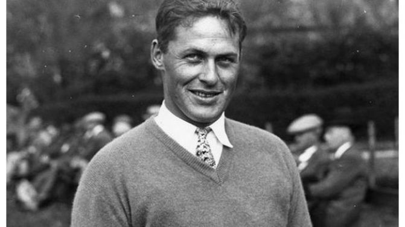

boby jones
9/11/2021
boby jones
El masters de augusta es el torneo que se invento en el campo de Bobby jones, Bobby jones es el único golfista que jugo el tour profesional pero nunca recibió ningún pago, nunca quizo cambiar su estatus de amateur a profesional, esto ocasiono que los golfistas profesionales lo molestaran al principio, ya que el decía que solo jugaba golf por amor al deporte y no por el dinero. Al principio como no llego y gano lo molestaron pero después se volvió el golfista mas respetado por ganar los cuatro campeonatos mayores en el mismo año. Es el mejor golfista de su epoca